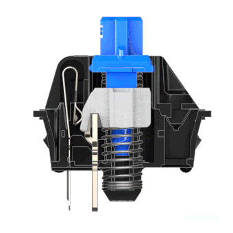
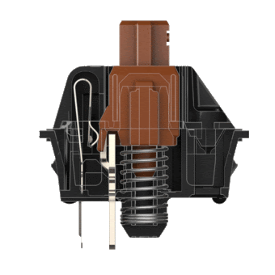
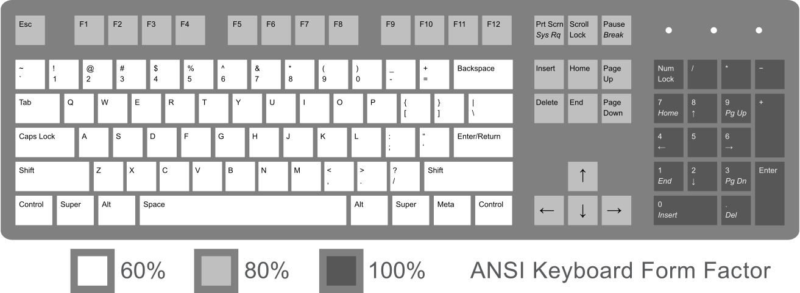
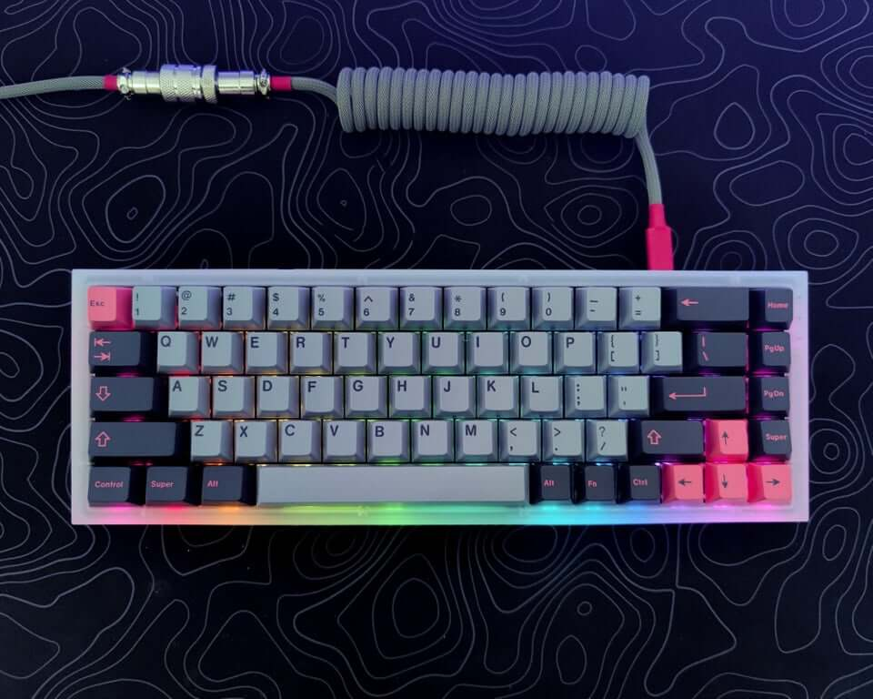

Guide d'achat - 7 conseils pour bien choisir votre clavier meca en 2020
Nous passons beaucoup de temps à choisir un CPU ou un GPU pour avoir le PC Gamer de nos rêves, mais vous oubliez peut-être un élément qui peut changer radicalement l'expérience pour le mieux : un clavier mécanique.
Je ne cache pas mon obsession pour les claviers mécaniques, qui sont à la fois un hobby et un outil de ma profession. Naturellement, j'y consacre beaucoup d'argent. Mais ce n'est pas nécessaire. Les claviers mécaniques n'ont jamais été aussi bon marché et d'aussi grande qualité, Si vous n'avez pas encore craqué pour le clavier gamer de vos rêves c'est peut-être le bon moment.
Vous passez peut-être plus de temps que d'habitude devant votre ordinateur, car nous nous efforçons tous de limiter la pandémie de coronavirus, c'est donc le bon moment pour intervenir. Mais... quel clavier gamer choisir aujourd'hui en 2020 ? Et qu'est-ce que c'est que ces interrupteurs ? Quel switch choisir ? Nous sommes là pour vous aider.
1 - Pourquoi choisir un clavier gamer ? Quelle différence avec un clavier standard ?
Les claviers qui accompagnent les ordinateurs de bureau sont généralement des claviers à membranes. Un clavier à membrane fonctionne de la manière suivante : vous appuyez sur la touche jusqu'en bas, et le contact sur le dôme déclenche une pression.
L'inconvénient est que les membranes en caoutchouc sont molles, pas très précises, et qu'il faut appuyer à fond à chaque fois. Les ordinateurs portables ne sont pas beaucoup mieux avec leurs interrupteurs à ciseaux. Ils offrent un peu de tactilité, mais le faible débattement et le caractère un peu mou ne sont pas des gages de fiabilité dans le temps.
Un clavier mécanique fonctionne de la manière suivante. Lorsque vous appuyez sur la touche, une tige se déplace dans le boîtier et permet aux contacts métalliques de se toucher. C'est ce qui déclenche l'allumage de chaque lettre. D'autres types d'interrupteurs sont considérés comme mécaniques mais ont des mécanismes entièrement différents. Les interrupteurs Topre sont populaires mais plutôt chers. Ces interrupteurs sont dotés d'un dôme en caoutchouc rigide et d'un ressort conique. Ici, l'actionnement est déclenché par une modification de la capacité du ressort lorsque vous appuyez, et la bosse tactile provient de l'effondrement du dôme. Il existe également des contacts métalliques de style alpin, des ressorts de flambage et des interrupteurs à effet Hall. Tous ces éléments sont cependant assez rares dans les claviers modernes.
2 - Comment choisir les switches pour votre clavier gamer ?
Veillez à vérifier la frappe dès le début, lorsque vous achetez un clavier d'ordinateur. Vous ne voulez pas vous retrouver avec un clavier qui ressemble à une machine à écrire (ce qui vous donnera littéralement du fil à retordre). Vérifiez et testez la sensation des touches. Certains claviers ont un toucher sensible, doux, semblable à celui d'une plume, tandis que d'autres exigent une pression supplémentaire pour taper.
Le mécanisme qui fait que les touches répondent au toucher est le "switch". Les interrupteurs à dôme en caoutchouc, les interrupteurs à ciseaux et les interrupteurs mécaniques sont les principaux types d'interrupteurs utilisés par la plupart des fabricants. Les interrupteurs font toute la différence en termes de sensibilité, de niveau de bruit et de confort. Découvrez-les et choisissez le bon.
Les différents types de switches
Il existe trois types d'interrupteurs mécaniques : linéaires, tactiles et cliquables. Ils sont définis par leur comportement au niveau de la frappe.Les switches linéaires
Les interrupteurs linéaires ont le fonctionnement le plus simple.
Ils se déplacent en ligne droite de haut en bas sans aucun retour tactile ni bruit de cliquetis.
La douceur de la frappe permet un actionnement plus rapide, ce qui en fait l'interrupteur préféré des joueurs.

Les switches tactiles
Les switches tactiles fournissent un retour tactile..
Ils produisent une bosse visible au milieu du trajet pour vous indiquer que votre pression sur la touche a été enregistrée.
Ils sont idéaux pour taper du texte car ils vous donnent une légère idée de la pression que vous exercez sur une touche sans que vous ayez besoin de descendre en bas.
Switches à cliquetis
Les interrupteurs cliquables fonctionnent de la même manière que les interrupteurs tactiles. Mais ils émettent un "clic" distinct lorsque la touche est activée.
Ils sont parfaits pour ceux qui veulent une indication distincte de celle d'une touche et pour ceux qui aiment le son "clic".
3 - Comment choisir la bonne taille pour son clavier meca ?
Les claviers mécaniques sont de tailles très différentes. Il peut être difficile de déterminer lequel vous devez choisir, surtout si vous êtes habitué à un clavier traditionnel de taille normale (100 %) où toutes les touches dont vous avez besoin sont à portée de main. Voici un guide qui vous aidera à prendre une décision en fonction de votre utilisation du clavier.
Pour vous donner une idée. Voici une illustration présentant les différentes taille de clavier meca.
Les claviers meca plus petit, clavier meca 60%
Ce sont plus petit modèles, il n'y pas de touche Fn, ni de pavé numérique
Pourquoi choisir un clavier plus petit ?
Les claviers compacts permettent de gagner de l'espace sur le bureau et de réduire la distance que votre main doit parcourir entre votre clavier et votre souris.
Que faire des touches manquantes ?
Les couches de fonctions vous permettent de configurer des "couches" qui peuvent être basculées. C'est comme si vous mainteniez la touche fn enfoncée sur votre ordinateur portable pour régler le volume ou la luminosité de votre écran..
Les claviers mécaniques sont une question de préférence, vous n'êtes donc pas obligé de suivre ces recommandations si vous ne le souhaitez pas. C'est très bien ! C'est la beauté des claviers personnalisés.
Clavier meca Full-size (100%)
C'est le clavier de bureau par excellence. Toutes les touches, dans toute la largeur. C'est la taille et la disposition standard de nombreux claviers de bureau et de jeu.

Avantages
- Vous disposez de toutes les touches.
- Disponible partout.
- Disponbilité des touches dans le commerce.
- Un grand choix d'options possible.
Inconvénients
- Si vous n'avez pas besoin d'un pavé numérique. Prenez plus petit.
4 - Design
La conception et l'architecture du clavier font une grande différence dans votre expérience informatique. En fonction de leur conception, les claviers peuvent être regroupés en claviers standard, claviers de jeu et claviers ergonomiques.
Les claviers standard sont les plus courants. De nos jours, les claviers standard sont dotés de touches multimédia en plus du jeu standard de 104 touches. Les claviers de jeu sont destinés aux jeux et intègrent les touches multimédia ainsi que d'autres touches spéciales pour les jeux.
Les claviers ergonomiques sont conçus pour positionner vos mains naturellement et réduire la tension en offrant un repose-poignet adéquat pour maximiser le confort. Ils sont certes chers, mais ils en valent la peine.
Optez pour un clavier ergonomique si vous souffrez du syndrome du canal carpien. Ceux qui utilisent leur ordinateur dans l'obscurité préféreront peut-être le clavier avec éclairage. Ceux qui privilégient la portabilité pourraient vouloir un clavier flexible et pliable qui ne prend pas beaucoup de place dans leur sac. Pour ceux qui sont sujets aux accidents, des claviers qui peuvent résister aux liquides sont disponibles sur le marché.
5 - Clavier avec fil ou sans fil
Les claviers gamers avec et sans fil ont toutes deux leurs avantages et leurs inconvénients. La configuration sans fil coupe le cordon qui encombre votre bureau, mais il y a des chances qu'il interfère avec d'autres appareils sans fil.
Pour les jeux, les claviers câblés sont préférables car les claviers sans fil ont tendance à être à la traîne, ce qui entrave la jouabilité. Les claviers sans fil fonctionnent sur batterie, qui doit être rechargée ou remplacée de temps en temps. Cela augmente le coût. Par conséquent, un clavier qui prend en charge à la fois les configurations avec et sans fil est préféré par de nombreuses personnes qui veulent le meilleur des deux mondes.
Les claviers gamers sans fil que je vous propose ici sont des claviers avec une très bonne autonomie et des temps de réponse très bas.
6 - Les touches macro
Pour accélérer vos tâches, beaucoup de claviers ont aujourd'hui des touches de macro pour le lancement des applications, le contrôle du volume, le contrôle lecteur de musique, etc. Ils comportent également des touches de gestion de l'énergie, des une disposition des caractères et des touches de raccourci personnalisables très pratiques parfois. Certains claviers sont équipés d'un touchpad ou d'un mini joystick pour remplacer la souris.
7 - Le prix
Selon les fonctionnalités qu'ils intègrent, les claviers sont proposés à des prix différents. Il est évident que plus il comporte de fonctionnalités, plus il est cher. Recherchez un clavier qui réponde à vos besoins et à votre budget. Soyez intelligent et ne dépensez pas pour des choses dont vous n'avez pas vraiment besoin.